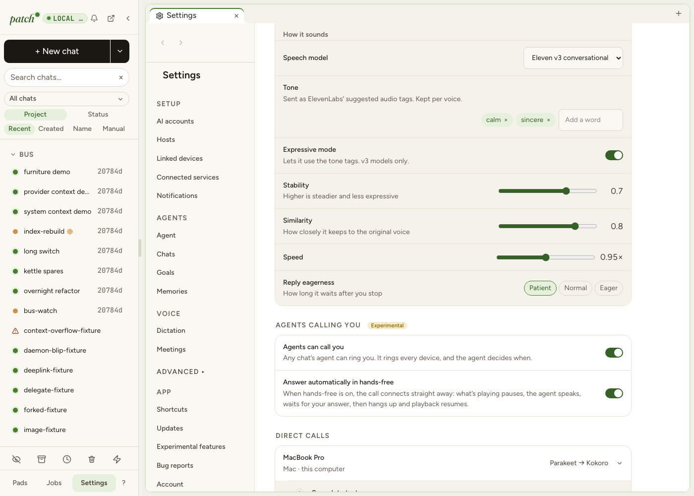
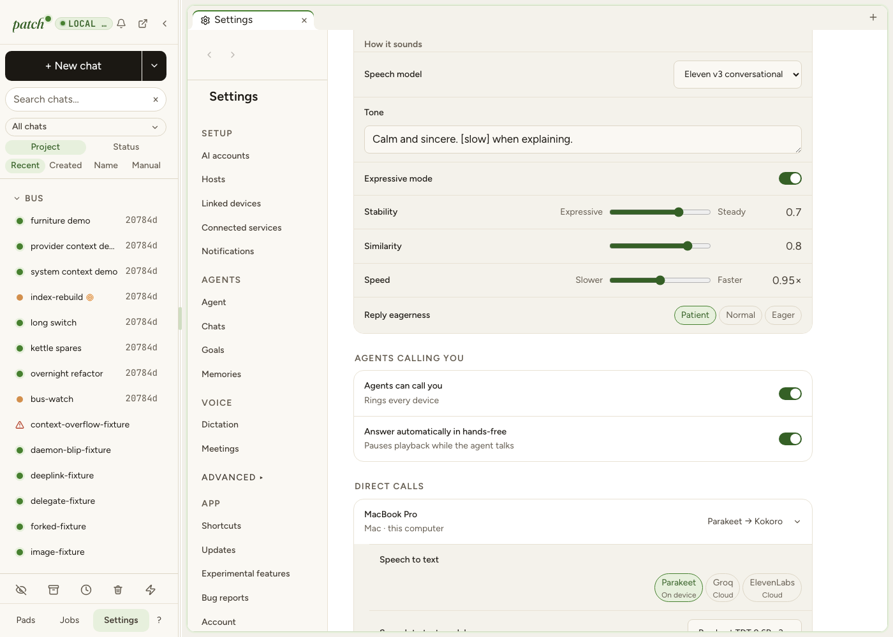
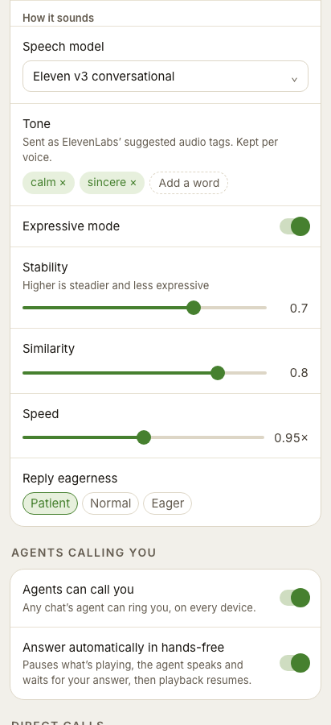
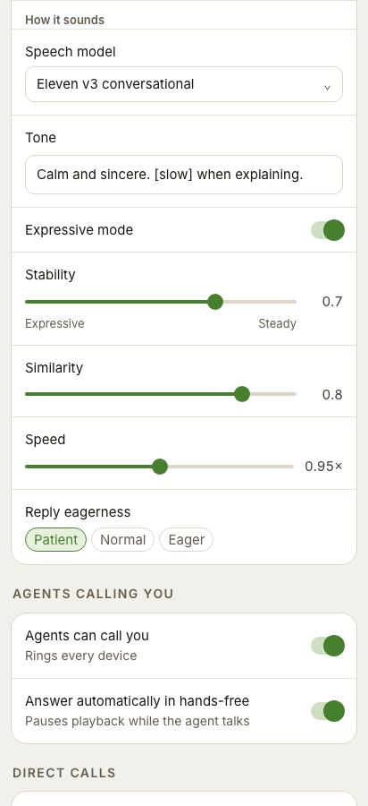
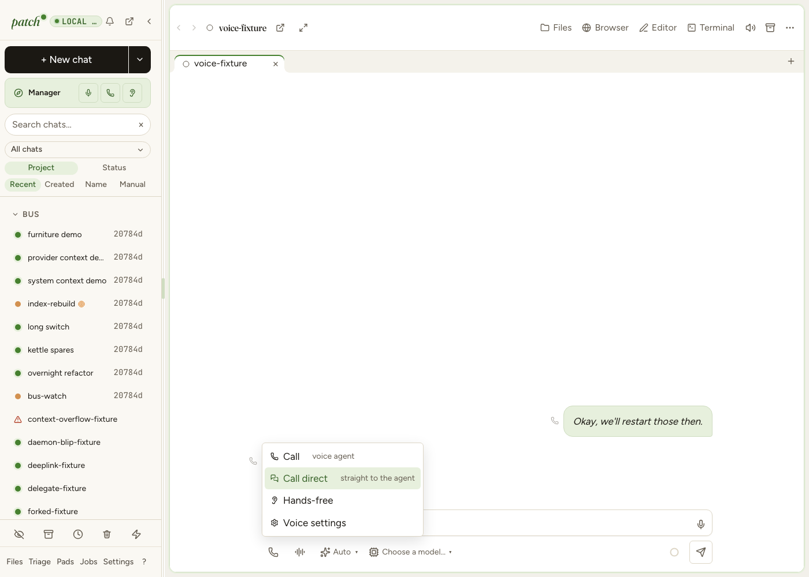
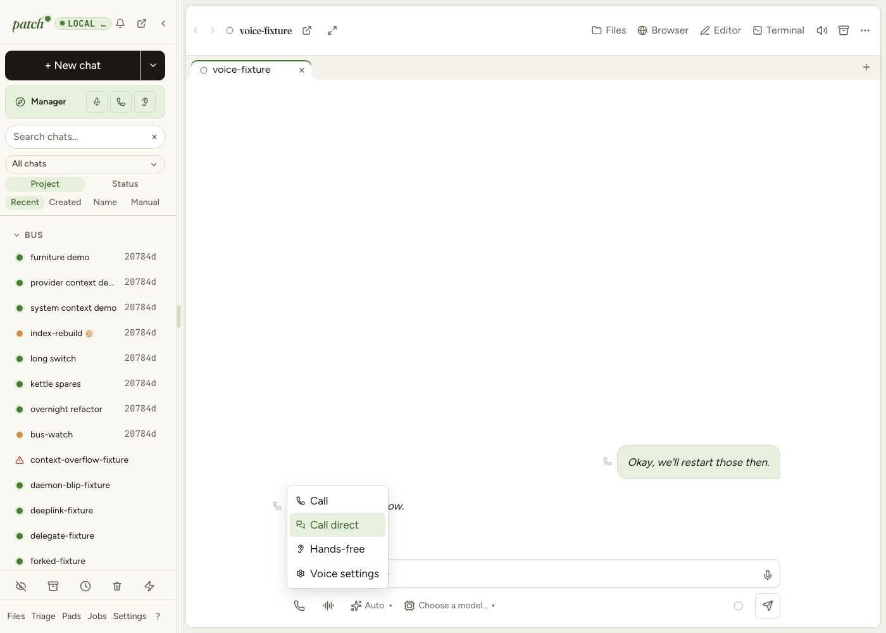

Design pass
Voice agent sound
- Tone is one free-text field for every provider, written your way, [tags] included
- Slider helper text replaced with end labels (Expressive/Steady, Slower/Faster), tracks aligned
- "Experimental" badge removed
- Agent-call descriptions cut to "Rings every device" / "Pauses playback while the agent talks"
Direct calls, device open
- Step numbers removed: the reveal already shows the order
- Section descriptions and repeated "From ElevenLabs" removed
- "on device, free" / "cloud" → "On device" / "Cloud" at 12px
- "Can’t: no speech engine on this device" → "No speech engine"
Before
After
Phone settings
- Same copy cuts
- Tone as a text field
- Stability end labels
Before
After
Call button menu
- Hint text removed: "Call" and "Call direct" read on their own
Before
After
Direct call
- Call bar: "speak to add to the queue" removed
- "Queued · agent busy" → "Queued"
Hand-offs
- Hand-off rows up to 14px minimum
Suggestions
- Similarity and Style sliders mean little to most people. Consider hiding them behind "More".
- Reply eagerness is about listening, not sound. It may sit better in a "How it listens" group with transcription settings.
- The direct-call "Agent working" line appears both in the call bar and in the chat. One place may be enough.